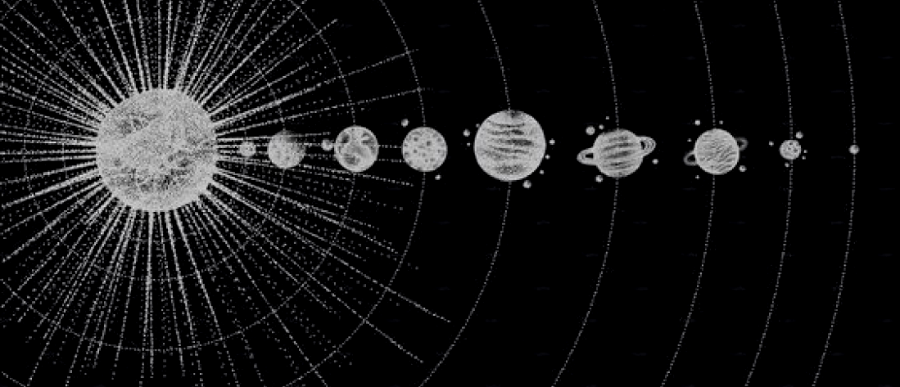

Benvenut* a bordo di Cosmicom!
Se cercavi un punto di riferimento per gli appassionati di astronomia, sei atterrat* su quello giusto!
Dal Sole, a Mercurio fino a Plutone (che consideriamo ancora un pianeta!): analizzeremo le loro intriganti storie, le loro caratteristiche uniche e i misteri che li circondano.
Non dimenticare di dare un'occhiata alle lune che orbitano attorno ai pianeti, con le loro superfici misteriose e le possibilità di ospitare oceani nascosti e forme di vita microbiche. Scopri con noi anche le ultime scoperte scientifiche e le missioni spaziali che hanno svelato nuovi segreti e gettato nuova luce sulla comprensione dei nostri vicini celesti. E non lasciarti sfuggire le curiosità sulla bellezza cosmica che ci circonda!